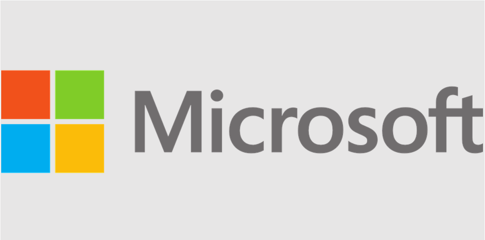
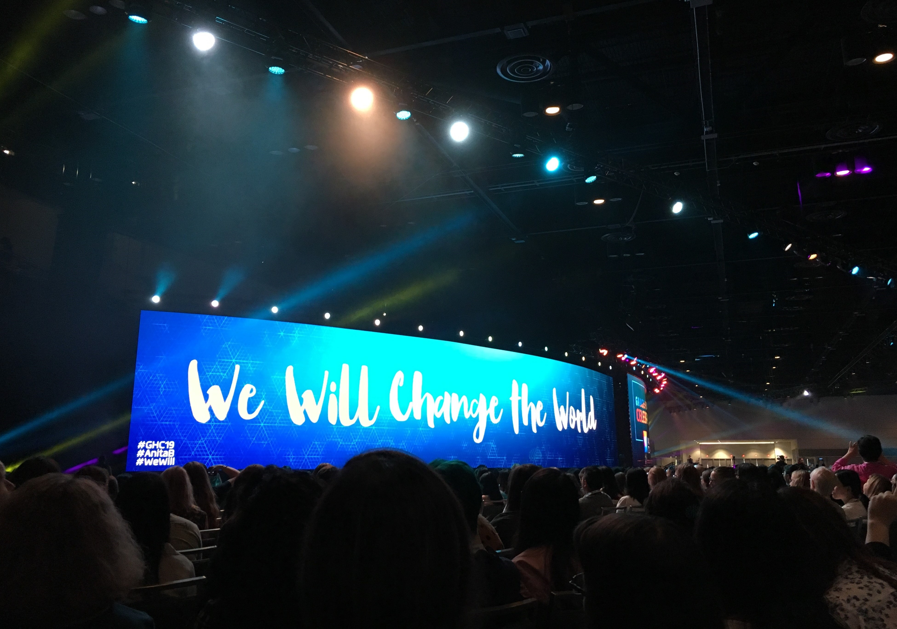
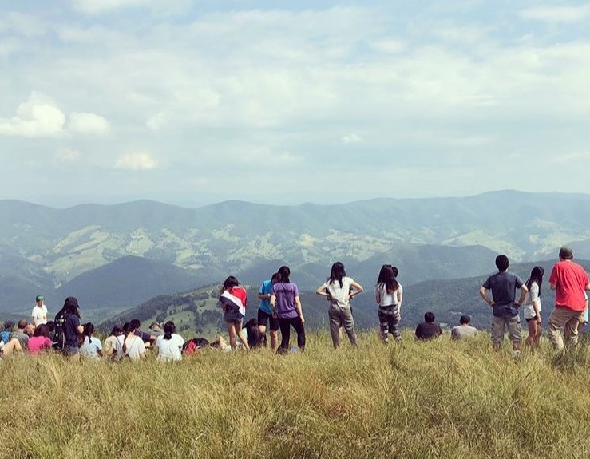

Amy Li

Hello! I'm a rising senior at Carnegie Mellon University studying Computer Science with a minor in Neural Computation.
On campus, I co-lead the undergraduate mentoring program for Women@SCS and SCS4ALL, and was previously a teaching assistant for 15-281 Artificial Intelligence: Representation and Problem-Solving.
In my free time I enjoy rowing on my school's club team, playing violin, spending time with friends, reading, hiking, and baking.
Some fun facts about me:
• I once played in a concert with Macklemore and Ryan Lewis.
• I have climbed the Via Ferrata in the mountains of West Virginia.
• In 2018, I helped put together a solar energy system to power a computer lab.
Past (and current) endeavors:
Robinhood Software Engineer Intern
Summer 2021
This summer, I am super excited to intern at Robinhood on the Data Growth team!

Facebook Software Engineer Intern
Winter 2021
During my junior year, I took the a semester off from (virtual) school and interned at Facebook. I worked on the Privacy
Coverage team to improve an internal Recommendation Engine service that is used by all engineers across the company
to ensure that privacy-sensitive code changes are matched with the correct privacy documents. I built data pipelines
and implemented 3 end-to-end machine learning models to improve the accuracy of correct recommendations from around
80 to 90%.

Microsoft Software Engineer Intern
Summer 2020
Last summer, I returned to Microsoft as an intern on the Cortana team. I designed and built systems
to analyze performance metrics and automate deployments serving 200K+ daily active users worldwide, and
learned lots about back-end microservices and DevOps practices along the way.

Grace Hopper Celebration of Women in Computing
Fall 2019
During fall of 2019, I received a scholarship to attend the Grace Hopper Conference in Orlando, Florida.
I got the opportunity to attend tech talks, participate in mentoring circles, and meet other women in the tech industry from all over the world.
It was one of the most incredible and empowering experiences I've ever had.
Microsoft Explore Intern
Summer 2019
In summer 2019, I joined Microsoft as an Explore Intern.
As part of the Outlook Web App team, I worked closely with user researchers, designers, and other engineering interns to build a new feature for Outlook's email reading pane.
I learned full-stack web development skills by creating the back-end server changes and tooltip UI for our feature.

National Youth Science Camp Delegate
Summer 2018
The summer after high school, I spent 3 1/2 weeks in the woods of West Virginia with no cell phone service and almost no internet connection.
Surrounded by 106 fellow delegates from all 50 states and a few other countries, I learned about applications of STEM research in the real world and why it is important to have ethical leadership in these fields.
I also gained a newfound appreciation for being in the great outdoors by going on three overnight backpacking trips and going rock climbing, caving, and mountain biking.

Software Developer Apprentice at Expedia
Summer 2017
During the summer of 2017, I interned at Expedia on the Packages Orchestration Team.
I was responsible for developing A/B tests in the flight selection and checkout pages to improve site usability and increase customer conversion for the Bundle Deals shopping path. At the end of the summer, some of the features I created were tested and shipped to production on Expedia's international sites.
Girls Who Code Summer Immersion Program @ Microsoft
Summer 2016
Over the course of 7 weeks, I was exposed to many different areas of computer science, from computer graphics to robotics to web development. The countless ways these tools could be used to improve people's lives inspired me to pursue a career in technology.
The summer culminated in a 2-week long final project.

Girls Who Code Club Co-founder and President
2015-2018
In response to the gender imbalance in CS-related classes and clubs at my high school, I helped found the Garfield Girls Who Code Club in order to encourage more girls from my school and the local community to learn computer science.
I taught weekly lessons on Python and Web Development.
Fun fact: This page has been accessed at least

times since June 14th, 2020!